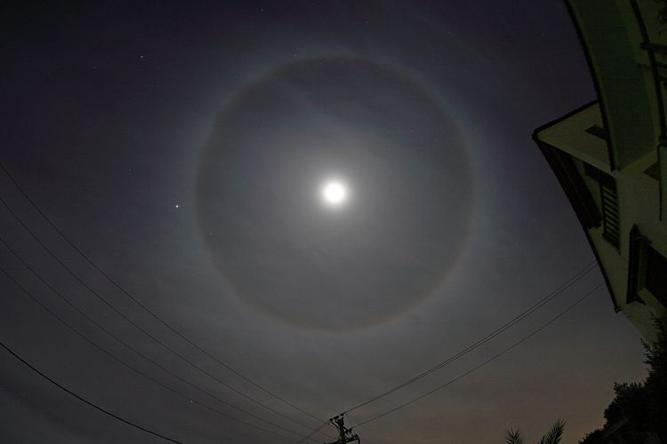
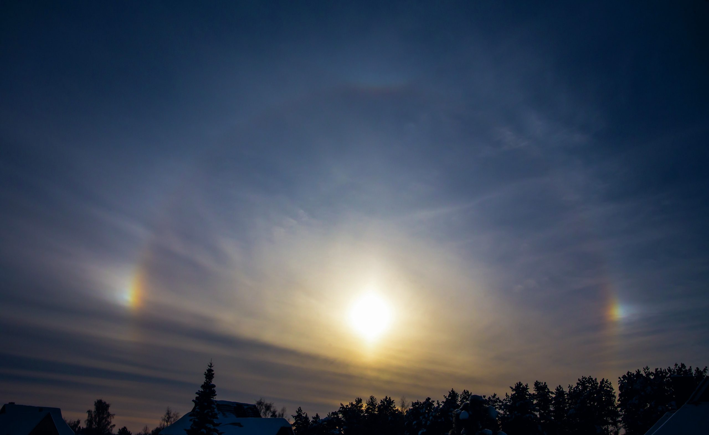
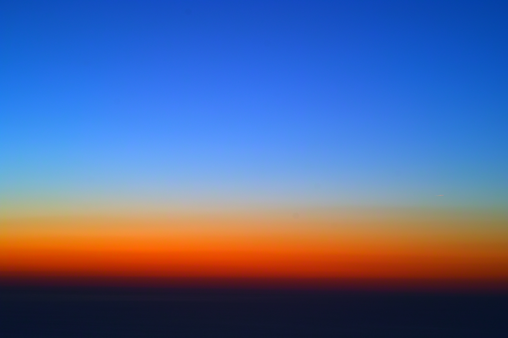

Siap menyelami keajaiban langit? 🌌 Yuk, kita telusuri berbagai fenomena atmosfer yang menakjubkan!
💧 Hujan (Rainfall)
Hujan terbentuk melalui proses pengangkatan udara (uplift) yang kemudian mengalami pendinginan adiabatik. Ketika udara mencapai titik jenuh, uap air terkondensasi menjadi droplet dan mulai tumbuh melalui proses collision coalescence (pada hujan hangat di daerah tropis) atau melalui mekanisme kristal es. Saat droplet tumbuh melebihi radius kritis, gaya gravitasi mengalahkan gaya gesek sehingga presipitasi turun ke permukaan.
Video Animasi Siklus Air:
Video animasi singkat menjelaskan proses siklus air dan terjadinya hujan
Sumber video
Jenis-jenis Hujan:
☔ Konvektif: Terjadi saat pemanasan kuat di siang hari; intensitas tinggi, durasi singkat.
🏔️ Orografis: Udara lembab naik pegunungan → mendingin → hujan.
🌬️ Frontal: Pertemuan massa udara hangat dan dingin.
🚨 Ekstrem: Curah hujan sangat besar dalam waktu singkat (sering menyebabkan banjir).
Hujan lebat di perkotaan.
⚡ Badai Petir (Thunderstorm)
Badai petir merupakan salah satu fenomena cuaca konvektif paling intens dan kompleks di atmosfer. Fenomena ini muncul ketika terdapat kombinasi kelembapan tinggi, atmosfer yang sangat labil, dan mekanisme pengangkatan (lifting) yang kuat.
Video Animasi Proses Petir:
Animasi yang menjelaskan proses pembentukan muatan listrik dan pelepasan petir.
Sumber video
Kondisi Pembentukan Badai Petir:
- Kelembapan (Moisture): Menyediakan bahan baku kondensasi (udara hangat kaya uap air).
- Ketidakstabilan Atmosfer (Instability): Udara permukaan lebih panas dari udara atas; terukur melalui CAPE (Convective Available Potential Energy). Semakin besar CAPE → semakin kuat updraft → semakin intens badai.
- Mekanisme Pengangkatan (Lift): Berasal dari konvergensi angin, sea breeze, topografi (lereng gunung), atau front.
Proses Terbentuknya Petir:
- Pemisahan muatan: Interaksi partikel es (graupel) dan kristal es → partikel besar bermuatan negatif (dasar awan), partikel kecil bermuatan positif (puncak awan).
- Pelepasan muatan: Terjadi saat beda potensial cukup besar (IC, CG, atau CC). Suhu saluran petir mencapai 30.000°C.
Badai petir yang terbentuk dari awan Cumulonimbus.
🚨 Angin Kencang & Puting Beliung
Angin Kencang (Strong Wind / Gust):
Aliran udara dengan kecepatan tinggi yang terjadi akibat:
1. Perbedaan Tekanan Besar (Angin menguat ketika jarak antar-isobar rapat).
2. Perbedaan Suhu yang Tajam (Contoh: angin laut dan darat, atau angin lembah gunung).
3. Pengaruh Rotasi Bumi (Coriolis Effect, memungkinkan terbentuknya jet stream).
Angin kencang yang berpotensi menyebabkan pohon tumbang.
Puting Beliung (Tornado Lokal):
Kolom angin berputar berkecepatan tinggi dari awan Cumulonimbus. Berskala lokal, durasi singkat (3–10 menit), namun memiliki daya rusak besar.
Kondisi Pemicu: Atmosfer sangat tidak stabil, pemanasan permukaan intens, updraft kuat, dan gangguan angin yang memicu rotasi (wind shear).
Proses Pembentukan: Pemanasan kuat → Updraft → Awan Cb → Gangguan Angin → Rotasi Vertikal → Funnel Cloud → Kontak Permukaan.

Video Animasi Proses Puting Beliung:
Video animasi edukasi yang menjelaskan penyebab, proses, dan dampak dari Angin Puting Beliung.
Sumber video
🌫️ Kabut (Fog)
Kabut adalah fenomena atmosfer berupa kumpulan droplet air yang terbentuk sangat dekat dengan permukaan tanah sehingga mengurangi jarak pandang (< 1 km). Ini merupakan awan permukaan yang muncul ketika udara mencapai kondisi jenuh (RH 100%).
Cara Kabut Terbentuk:
- Pendinginan udara: Udara mendingin → kapasitas menahan uap air menurun → jenuh. (Paling umum)
- Penambahan uap air: Suplai uap air besar (misalnya dari danau atau tanah lembap) membuat udara jenuh tanpa harus didinginkan.
Jenis–Jenis Kabut:
💨 Kabut Radiasi: Paling umum. Terjadi saat malam hari yang tenang dan langit cerah (pendinginan permukaan).
🌊 Kabut Adveksi: Udara hangat lembap bergerak melintasi permukaan yang lebih dingin (pendinginan horizontal).
⛰️ Kabut Lembah: Udara dingin terkumpul di lembah dan meningkatkan kelembapan.
♨️ Kabut Penguapan (Steam Fog): Udara dingin melintasi permukaan air hangat.
Kabut yang menyelimuti wilayah pegunungan.
🧊 Embun, Hujan Es & Suhu Ekstrem
Embun & Embun Beku (Dew & Frost):
Embun (Dew): Tetesan air kecil yang terbentuk langsung di permukaan benda ketika suhu permukaan mencapai titik embun (dew point).
Embun Beku (Frost): Terbentuk ketika uap air langsung menjadi kristal es pada permukaan benda yang suhunya berada di bawah 0°C (proses deposisi/sublimasi).
Fenomena embun beku pada tanaman.
Hujan Es (Hail):
Presipitasi berupa bongkahan es yang jatuh dari awan Cumulonimbus (Cb). Terjadi karena updraft kuat yang mengangkat butiran air naik-turun berkali-kali melalui lapisan bersuhu di bawah nol, membentuk lapisan es yang semakin tebal.
Bongkahan es yang jatuh selama badai petir.
Fenomena Angin & Suhu Ekstrem:
Puting beliung, angin kencang, dan perubahan suhu ekstrem sering saling berkaitan. Simak video yang menjelaskan fenomena ini:
Video edukasi mengenai perubahan suhu ekstrem.
Sumber video
🔥 HEATWAVE (Gelombang Panas): Suhu meningkat jauh di atas rata-rata normal berhari-hari. Penyebab: Tekanan tinggi yang mengunci udara panas (high-pressure dome).
❄️ COLD SURGE (Serangan Dingin): Aliran udara dingin yang bergerak cepat dari wilayah tekanan tinggi lintang tinggi (misalnya Monsun Timur Laut). Menyebabkan penurunan suhu mendadak.
☁️ Awan Hujan & 🌈 Fenomena Optik
Awan Gelap / Awan Hujan:
Dua jenis awan utama yang menghasilkan hujan adalah Nimbostratus (Ns) dan Cumulonimbus (Cb).
- Nimbostratus: Awan tebal, luas, berlapis, menghasilkan hujan stabil, intensitas ringan–sedang, dan berdurasi lama (terbentuk dari pergerakan udara lambat/stabil).
- Cumulonimbus: Awan vertikal tinggi (puncak bisa mencapai >16 km), menghasilkan hujan lebat, badai, petir, dan ekstrem (terbentuk saat udara sangat tidak stabil dan updraft cepat).
Awan Cumulonimbus (Cb) yang gelap dan menjulang tinggi.
Pelangi (Rainbow):
Fenomena optik yang muncul ketika cahaya matahari mengalami pembiasan, pemantulan, dan pemecahan warna di dalam tetesan hujan.
Jenis: Pelangi Utama (satu kali pantulan), Pelangi Sekunder (dua kali pantulan, warna terbalik), Fogbow (oleh droplet kabut).
Pelangi utama yang terbentuk setelah hujan.
Fenomena Optik Atmosfer Lain:
-
Halo: Cincin cahaya di sekitar Matahari/Bulan akibat pembiasan pada kristal es heksagonal di awan sirus.

Halo
-
Sundog (Parhelia): Titik terang atau "matahari kembar" di samping Matahari, dibentuk oleh kristal es tersusun horizontal.

Sundog
-
Birunya Langit & Merahnya Senja: Terjadi karena Rayleigh Scattering (hamburan cahaya oleh molekul udara).

Rayleigh
💡 Fun Fact & 🎮 Kuis
FAKTA UNIK METEOROLOGI 💡
- ⚡ Petir 5x lebih panas dari Matahari (30.000°C!).
- 🌈 Pelangi sebenarnya lingkaran penuh (360°), kita hanya melihat busurnya.
- 🧊 Hujan Es terjadi di iklim tropis karena arus naik (updraft) dalam awan Cb sangat kuat.
Setelah mempelajari berbagai fenomena cuaca yang menakjubkan, Waktunya Uji Pengetahuanmu! 🚀